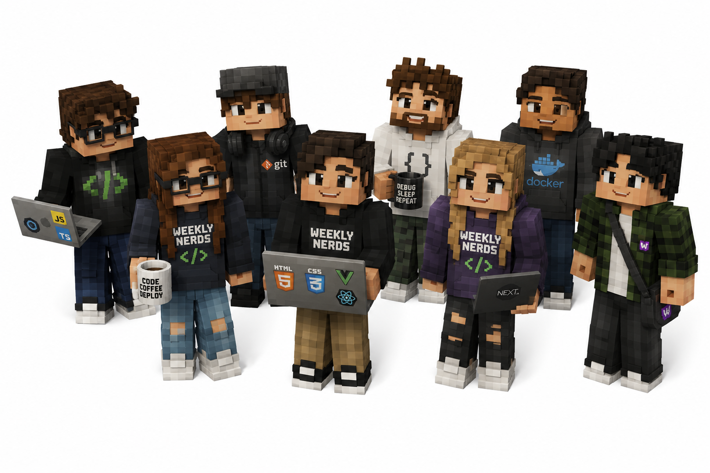

Weekly Nerds
Project omschrijving
Elke week kregen we een gastspreker: een developer, designer of iemand anders uit de industrie die een talk gaf over hun werk, een techniek of een visie op het vak. De Weekly Nerds waren bedoeld om breder te kijken dan alleen de projecten: inspiratie opdoen, nieuwe perspectieven horen en zien hoe het werkveld eruitziet.
Plannen, ontwikkelingen en reflecties
Ik heb bij elke talk notities gemaakt en daarna een korte reflectie geschreven. De talks varieerden enorm: van UX-design en wat AI niet kan vervangen, tot CSS-animaties, anchor points en exclusive design. Nils Binder had een interessante presentatie over UX en de menselijke kant van design die mij bijgebleven is. Sanne gaf workshops over CSS-elementen die ik meteen kon toepassen in mijn projecten.
Het was soms lastig om alles te combineren met de projecten: een volle werkweek en dan ook nog een talk goed tot je nemen, maar terugkijkend zijn dit precies de momenten geweest die mijn denken hebben verbreed.
Afbeeldingen

Uitkomsten en inzichten
De Weekly Nerds lieten me zien hoe breed het vak web development eigenlijk is. Niet alleen code schrijven, maar ook nadenken over gebruikers, toegankelijkheid, samenwerking en hoe technologie past in een bredere context. Een aantal talks hebben direct invloed gehad op keuzes die ik in mijn projecten maakte. Dat is precies wat dit soort sessies moeten doen.
Verslagen
Killian Valkhof | Functionaliteiten op het web | 4 feb
Killian heeft Polypane gemaakt, een browser speciaal voor developers die je responsive werk makkelijker maakt. Het is gratis voor studenten en ik vond het interessant om te zien hoeveel je daarmee tegelijk kunt checken. Maar wat ik het meest bijgebleven is, was zijn kernboodschap: je hebt veel minder JavaScript nodig dan je denkt.
Hij gebruikte de zin "Choose the least powerful language suitable for a given purpose" en dat heeft echt iets bij me geklikt. JavaScript is breekbaar. Als er iets mis gaat, valt alles weg. CSS en HTML zijn dat veel minder. Dus waarom zou je iets bouwen in JS als het ook in CSS kan?
Wat ik interessant vond:
- Een checkbox als toggle switch zonder JS, puur met HTML. Werkt alleen in Safari voor nu, maar laat zien waar het naartoe gaat.
- Soepel scrollen op de pagina kan gewoon in CSS. Of in JS als je meer controle wilt.
- Reduced motion: in plaats van animaties uitzetten voor iedereen, zet je ze standaard uit en enhanced je voor mensen die het prima vinden. Dat vind ik een slimmere manier van denken.
- Scroll margin zodat een element niet achter een vaste header verdwijnt wanneer je ernaar linkt.
- Het target-element highlighten met
:targetzodat duidelijk is waar je naartoe gescrolld bent. - Het
<details>en<summary>element voor accordions, gewoon met HTML. Zoals deze dropdowns!
/* Smooth scroll alleen voor mensen zonder motion preference */
@media (prefers-reduced-motion: no-preference) {
html {
scroll-behavior: smooth;
}
}
/* Scroll margin zodat content niet achter header verdwijnt */
#my-target {
scroll-margin-top: 100px;
}
/* Element highlighten wanneer ernaar gescrolld wordt */
#my-target:target {
outline: 10px solid deeppink;
transition: 1s ease-in-out outline;
}
Peter Paul Koch | Geschiedenis van de browser | 19 feb
Peter Paul Koch (ppk) is een van de mensen die het web echt heeft gevormd. Hij beheerde jarenlang quirksmode.org, een site vol met documentatie over hoe verschillende browsers zich anders gedroegen. In een tijd dat IE6 de dienst uitmaakte en browsers nauwelijks overweg konden met elkaar, was dat een onmisbare bron voor elke developer.
Zijn talk ging over de geschiedenis van de browser: van Mosaic en Netscape naar de browser wars met Internet Explorer, en hoe Firefox en later Chrome het speelveld opnieuw hebben opengebroken. Het was interessant om te horen hoe lang het heeft geduurd voordat browsers het eens werden over web standards, en hoeveel werk er is gaan zitten in browser-compatibiliteit.
Wat ik interessant vond:
- Hoe de browser wars (IE vs Netscape) ervoor zorgden dat developers dezelfde site soms twee keer moesten bouwen.
- Dat ppk zelf lang bijhield welke CSS en JS features in welke browser werkten, omdat er gewoon geen andere betrouwbare bron was.
- Dat de opkomst van de smartphone de browser opnieuw door elkaar schudde: mobile browsers gedroegen zich weer heel anders.
- Hoe langzaam het gaat voordat iets een standaard wordt, en hoe snel dingen daarna opeens overal beschikbaar zijn.
Nils Binder | 9elements | 4 maart
Nils werkt bij 9elements in Bochum, Duitsland (ongeveer 2,5 uur rijden). Ze doen communication design, web development en product development. Wat me aansprak is dat hij zowel creatieve websites maakt als UX-werk doet, inclusief right-to-left design. Hij is dus niet alleen de CSS-nerd die coole animaties maakt maar denkt ook echt na over design als geheel.
Een punt dat me echt is bijgebleven: hij was op de CSS Day in 2023 en had daarna het gevoel dat de web development wereld verdeeld is in twee groepen. Mensen die creatief en experimenteel mogen bouwen op hun eigen projecten, en mensen die in een groot bedrijf zitten en alleen maar bezig zijn met boring geoptimaliseerde marketing-gedreven dingen. Dat hoeft niet zo te zijn, en hij liet zien hoe je ook in een agency context creatief kunt werken.
Wat ik interessant vond:
- De "holy triangle of boring": Figma, ChatGPT, Tailwind. Hij zei het een beetje grappig maar het zit er wel in: als je alleen die drie gebruikt, ziet alles er hetzelfde uit.
- Steps function in CSS animaties kende ik nog niet. Daarmee maak je animaties die niet vloeiend maar in stappen gaan, wat voor pixel-achtige effecten heel handig is.
- Zijn standpunt over video's op websites: liever animaties of iets anders, want video's zijn onhandig op telefoons en leveren veel werk op voor de client. Dat vind ik een interessante afweging.
- Dingen die AI niet kan vervangen: animeren, creatief denken, en niet alleen reusable components stapelen maar juist iets unieks maken. Wel dingen als view transitions gebruiken.
- 9elements is welkom en hebben een flat voor bezoekers.
Rijk van Zanten | Directus CTO
Rijk is de CTO van Directus en heeft 10 jaar geleden ook de Web Dev Minor gedaan. Nu woont hij in Amerika. Zijn talk was een beetje anders dan de andere: minder technisch, meer een verhaal over hoe zijn carriere is gelopen en wat hij heeft meegemaakt.
Wat ik interessant vond:
- Immigreren naar Amerika is echt geen grapje. Er komt heel veel bij kijken en het is lang niet zo makkelijk als het soms lijkt.
- Een bedrijf runnen is ook iets waar veel bij komt kijken, dingen die je als buitenstaander niet ziet.
- Het was motiverend om te horen dat iemand die precies dezelfde minor heeft gedaan nu CTO is van een bekend open source project. Dat laat zien waar het naartoe kan gaan.
Robbert Boersema & Marjolein | Formulieren maken | 12 maart
Robbert en Marjolein zijn de mensen achter Frameless en werken mee aan het NL Design System. Hun talk sloot precies aan bij mijn Browser Technologies project: een formulier bouwen dat goed werkt voor iedereen. Ze liepen door een soort checklist heen van wat een goed formulier maakt, van opbouw tot validatie tot toegankelijkheid voor screenreaders.
Wat ik interessant vond:
- Verplichte velden consequent markeren en uitleggen waarom je specifieke informatie vraagt. Bijv bij telefoonnummer: schrijf erbij dat iemand gebeld of gesms't kan worden, want voor een dove persoon is bellen geen optie.
- Fouten niet alleen met een rode rand aangeven maar ook met tekst en een icoon. Kleur alleen is niet genoeg.
- Knoppen zoals "Volgende" aan het begin van de regel zetten, niet aan het einde. Dat is beter voor mensen met tunnelvisie.
- Elk invoerveld heeft een zichtbaar label boven het veld. Alleen bij de zoekfunctie mag je eventueel alleen een placeholder gebruiken.
- Met
aria-describedbykoppel je beschrijvingen en foutmeldingen aan een veld zodat een screenreader ze voorleest. inline-startenblock-startgebruiken in plaats vanwidthenheight, want dat werkt beter voor right-to-left talen.- Voorkomen dat vertaalsoftware de ingevulde gegevens van de gebruiker vertaalt met
<bdi translate="no">. Dat kende ik echt niet. - Vermijd vermelden hoe lang het formulier duurt om in te vullen: veel mensen zijn daar niet blij mee.
Rosa | Hacken | 2 april
Rosa heeft een master Experimental Publishing gedaan en bouwt zelf dingen, haalt printers uit elkaar en host het (un)repair-cafe in Rotterdam. Haar definitie van een hacker: iemand die skilled is in informatietechnologie en op een onstandaard manier dingen bereikt. Dat vind ik een mooie manier om het te omschrijven.
Haar talk ging over controle over je eigen digitale spullen: zelf een CMS bouwen, je eigen server hosten, een backend draaien op Google Sheets, en zo min mogelijk afhankelijk zijn van externe partijen.
Wat ik interessant vond:
- Planned obsolescence: fabrikanten bouwen hun producten zo dat je er steeds minder bij kan. Een Mercedes die harder rijdt als je meer betaalt, het oplaadsysteem van iPhone. Je wordt steeds afhankelijker zonder dat je het doorhebt.
- "De cloud" wordt altijd gepresenteerd als iets luchtig en fijns. Maar het is gewoon een saaie serverhal, ergens op een sciencepark. Dat framing vond ik grappig en ook wel terecht.
- Haar vraag "Bestaat mijn website nog wel over 10 jaar?" en "Kan mijn website bezocht worden door oude systemen?" zijn vragen die ik me daarvoor nooit had gesteld. Ze dwingen je na te denken over duurzaamheid van het web.
- Ze werkt aan prikbord.page en vindt het leuk om mensen een eerste hands-on ervaring te geven met zelf iets maken. DIY-cultuur toepassen op het web.
- Idee: een eigen server beginnen met de minor. Linux installeren, YunoHost, je eigen websites hosten. Klinkt als iets wat ik ooit wil proberen.
John Huijkman | Toegankelijkheid | 9 april
John heeft 16 jaar bij Q42 gewerkt en is recentelijk overgestapt naar Stichting Accessibility. Zijn talk sloot goed aan bij mijn HCD project: hij liet drie korte filmpjes zien van echte gebruikers die met toegankelijkheidsproblemen te maken hebben op het web.
Wat ik interessant vond:
- Martijn is slechtziend en moet altijd ver inzoomen. Veel websites zijn daarvoor niet gemaakt. Wat voor hem belangrijk is: schaalbaarheid, contrast, gerelateerde informatie bij elkaar, en een zichtbare focusrand.
- Naduah heeft mobiliteitsproblemen en is prikkelgevoelig en heeft last van migraine. Ze heeft haar laptop altijd op de laagste helderheid en haar telefoon altijd in dark mode. Veel informatie tegelijk, velle kleuren en animaties zijn voor haar vervelend. Dat geeft te denken over hoe je animaties en drukte op een pagina aanpakt.
- Gideo heeft autisme. Dingen die zijn bedoeld om aandacht te trekken zoals harde advertenties zorgen voor overlast. Hij heeft een rustige layout nodig.
- Wanneer een afbeelding puur decoratief is, moet je het alt-attribuut leeg laten maar wel aanwezig:
<img src="" alt="">. Dat klinkt simpel maar ik deed het voorheen gewoon weg. - Zijn drie vragen als hij iets maakt: Wat maakt het voor hem of haar moeilijk? Wat heeft hij of zij nodig? Hoe zou je het makkelijker kunnen maken? Dat is een goede manier om te starten met toegankelijk denken.
- Zijn aanpak: ervaar het zelf, laat anderen het ervaren, pas aan. Herhaal. Dat is eigenlijk precies wat we bij HCD ook deden met Ihab.
Hans de Zwart | Privacy | 21 mei
We begonnen met een oefening: aan een kant van de ruimte staan als je niks te verbergen hebt, aan de andere kant als je veel te verbergen hebt. Daarna keken we een video waarin straatinterviewer "vonpop" mensen vraagt of ze iets te verbergen hebben. Bijna iedereen zegt "nee, ik heb niks te verbergen", maar zodra hij vraagt naar je pincode of je adres met huisnummer, willen mensen die informatie alsnog niet geven. Dat liet meteen zien hoe relatief privacy eigenlijk is.
Hans legde uit dat privacy uit drie kanten te bekijken is: als individueel recht (met rust gelaten worden, jezelf kunnen zijn), als sociaal recht (wat je deelt verschilt per context) en als democratische noodzaak (autonoom je mening kunnen vormen). Wat je wel en niet deelt verschilt enorm per situatie: met je dokter deel je dingen die je met niemand anders deelt, en met vrienden gedraag je je anders dan thuis met familie.
Wat ik interessant vond:
- Helen Nissenbaum noemt privacy "contextuele integriteit": het probleem is niet dat iets gedeeld wordt, maar dat het op een onverwachte manier bij een onverwachte partij terechtkomt. Bijvoorbeeld als de bakker een foto van je maakt en die op Snapchat zet.
- Privacy is geen absoluut ding, het is altijd afhankelijk van de context.
- De AVG is eigenlijk common sense over hoe je met elkaars gegevens zou moeten omgaan, vastgelegd in wetgeving.
- Toestemming moet vrij en geïnformeerd zijn, en moet altijd ingetrokken kunnen worden. Daarnaast mag je gegevens ook verwerken als dat wettelijk verplicht is, of bij een gerechtvaardigd belang (bijvoorbeeld als je je beroep anders niet kan uitoefenen).
- Om aan de wet te voldoen moet je dataminimalisatie toepassen: zo min mogelijk gegevens verwerken van mensen.
The Web You Want | Leonie Watson, Cyd Stumpel & Sarah | 10 juni
Deze sessie bestond uit drie korte talks van verschillende sprekers, allemaal vanuit hun eigen visie op "het web dat ze willen".
Leonie Watson is blind, maar is dat niet altijd geweest, en houdt van AI. Ze liet zien hoe lange documenten vaak geen headings hebben en hoe afbeeldingen op webshops vaak geen omschrijving hebben, waar AI nu bij helpt door betere omschrijvingen te genereren. Ook gebruikt ze de Ray-Ban Meta glasses om dingen om haar heen accuraat omschreven te krijgen, en object identification met barcodes om producten te herkennen. Een retail agent helpt haar bijvoorbeeld met het uitzoeken van kleding: hoe het eruitziet, van welk materiaal het is en wat de reviews zijn. Haar punt: AI compenseert voor waar het web heeft gefaald, maar het is niet het web dat faalt, het zijn wij als mensen die het web niet zo toegankelijk maken als het zou kunnen zijn. Accessibility is resistance.
Cyd Stumpel wil een web met beweging erin. Ze ging in op popovers, prefers-reduced-motion en clip-paths, en gaf het advies om de komende maanden weer wat tijd te steken in het herleren van de basics, vooral met AI in je achterhoofd.
Sarah, die onder de naam Whimsically werkt en al sinds 1999 websites bouwt, mist het oude web: blogrolls, guestbooks, en de community-sfeer van toen. Ze noemde sites zoals Neocities waar je nog oude webpagina's van mensen kunt vinden. Haar stelling: we zijn collectief vergeten hoe je het web eigenlijk moet doorzoeken.